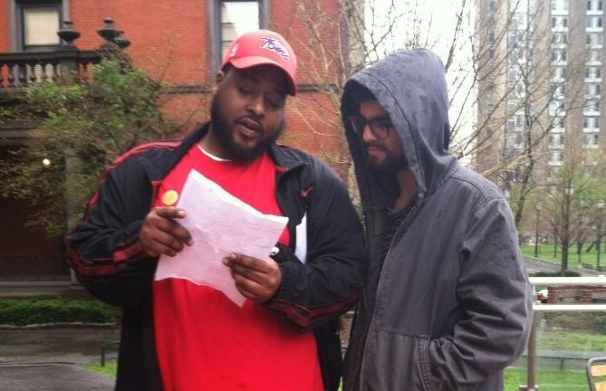
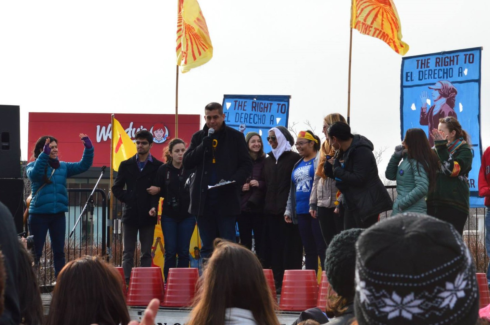
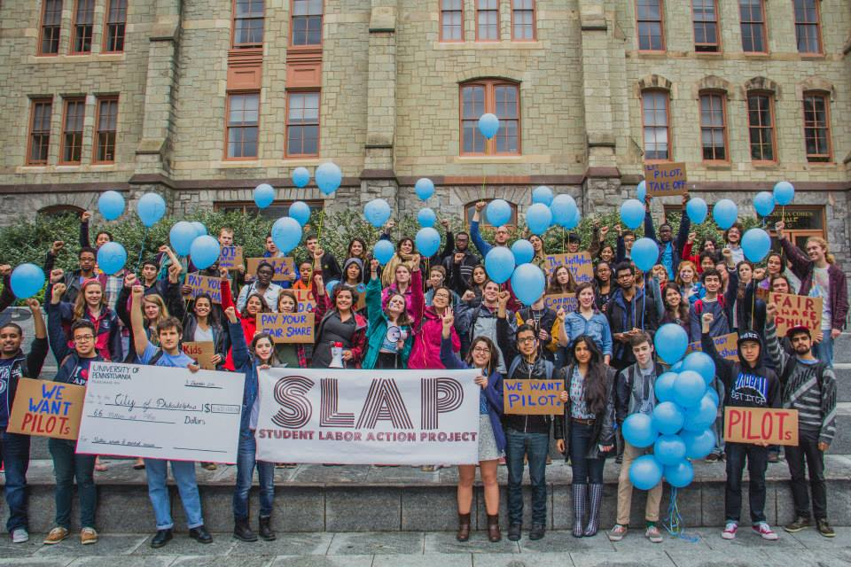

 Desde temprana edad, Daniel ha sido una persona política, siempre humanista y estudioso de la historia. Desde el 2011 empezó a escribir editoriales sobre la situación política de los E.E.U.U. en el periódico universitario. En el 2013, Daniel se unió a una campaña estudiantil para apoyar a los trabajadores del cafetín de la universidad en su esfuerzo para formar un sindicato. Al año y medio, más de 100 trabajadores tenían representación sindical, lo cual significó mejores protecciones a sus derechos y un contrato que les garantizara mejores sueldos y beneficios. A finales del 2013, Daniel también empezó a apoyar a la Coalición de Trabajadores de Immokalee (CIW), una organización de trabajadores agrícolas en la lucha para defender sus derechos humanos. Formó parte de la Mesa Directiva de la Alianza entre estudiantes y trabajadores agrícolas desde el 2014 hasta el 2015, cuando se mudó a Immokalee para trabajar con la CIW.
 Su trabajo en la CIW desde agosto 2015 hasta agosto del siguiente año se enfocó en brindar apoyo técnico a la comunidad. Durante este tiempo, Daniel formó parte de los equipos que re-modelaron la estación de radio 107.7FM y crearon el archivo digital de la historia de la organización. El archivo digital digitalizó más de 400 piezas individuales que ahora se pueden encontrar en una página web exclusivamente para el uso de la CIW. Durante este tiempo, también colaboró con los esfuerzos colectivos para organizar protestas, incluyendo una gira de 10 días en 7 ciudades que contó con la participación de más de 60 personas. También trabajó en casos de abusos de los derechos de los trabajadores, y hizo traducciones del inglés al español y vice versa a numerosos artículos y para presentaciones de los trabajadores a distintos públicos.
 Daniel fue actor político en la ciudad de Philadelphia de varios ángulos. Participó en las protestas de #BlackLivesMatter, o #LasVidaNegrasImportan, que han sacudido al país ante la injusticia de los asesinatos policiales a personas afro. También coordinó una campaña para reclamar que la universidad donde estudió se aprovechaba de su poder para no pagar suficientes impuestos a la ciudad, que vivía una crisis financiera. La presión estudiantil y popular inspiró al Concejo Municipal y al actual alcalde de la ciudad a brindar su apoyo a estas medidas. Daniel también fue pasante por seis meses a principios del 2015 con la Concejal María Quiñones Sánchez de la ciudad de Philadelphia, lo cual fue una experiencia pedagógica para entender más a fondo las dinámicas internas a la política municipal.